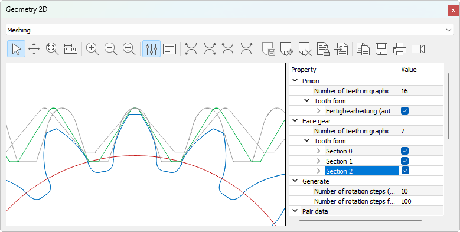

|
|
|


啮合
显示两个齿轮的啮合。
关于面齿轮的说明：
在 KISSsoft 中，面齿轮是通过在不同截面中模拟制造过程来计算的。您可以同时显示不同的截面。为此，请在图形窗口中打开，并将您所需的中的该属性设置为（见图 23.1）。

图 23.1：带属性浏览器的啮合图形窗口
理论齿形与有效齿形之间的差异意味着该齿存在根切！您可以在 2D 视图中更清楚地看到这一点。
碰撞检查：
在生成两个齿轮（在图形显示中）时，您可以选择碰撞显示选项。在图形中，这会（用方块）显示齿轮接触或可能发生碰撞的位置。
以黑色显示：接触（介于 0.005 * 模数距离和 0.001 * 模数穿透之间）
以红色显示：碰撞（大于 0.001 * 模数穿透）
系统会识别并标记所有啮合齿中的碰撞。此选项对于分析非渐开线齿形或实测齿形（使用 3D 测量机）的生成情况（配合理论单齿面生成检查）特别有用。
此功能也适用于圆柱齿轮和蜗轮蜗杆（但对蜗轮蜗杆有限制（参见"检查接触区点"章））。
注意：
如果选择了选项，则只能检查接触时的轮齿啮合。在这种情况下，不再显示碰撞。
Meshing
Displays the meshing of two gears.
Note about face gears:
In KISSsoft, the face gear is calculated by simulating the manufacturing process in different sections. You can display different sections at the same time. To do this, open the in the Graphic window, and set the property in the you require to (see Figure 23.1).
Figure 23.1: Meshing graphics window with Property Browser
The difference between the theory and the effective tooth form means that the tooth has an undercut! You can see this more clearly in the 2D view.
Collision check:
You can select the collision display option when generating two gears (in the graphical display). In the graphic, this shows (with squares) the points at which the gears touch or where collisions may occur.
shown in black: Contact (between 0.005 * module distance and 0.001 * module penetration)
shown in red: Collision (greater than 0.001 * module penetration)
The system identifies and marks collisions in all the meshing teeth. This option is particularly useful for analyzing the generation of non-involute tooth forms or measured tooth forms (using a 3D measurement machine) with a theoretical single flank generation check.
This function is also available for cylindrical gears and worm gears (but with restrictions for worm gears (see chapter Checking the contact pattern)).
Note:
If the option is selected, you can only check the tooth meshing on contact. In this case, collisions are no longer displayed.